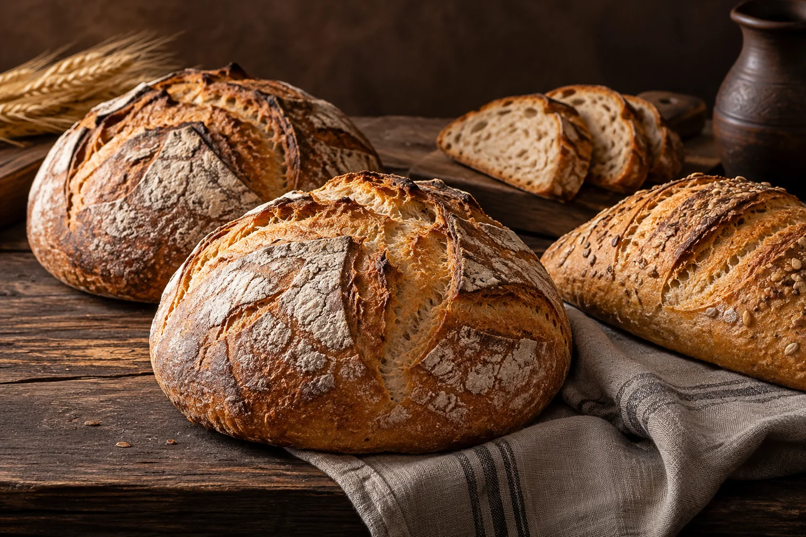

RĂCĂCIUNI, JUDEȚUL BACĂU
Gustul bun
începe acasă.
Valyston este brutăria din Răcăciuni pe care o găsești pe Strada Ștefan cel Mare, nr. 141.
DIN 2006RĂCĂCIUNI

PÂINE & PATISERIE01 / DESPRE NOI
BRUTĂRIA VALYSTON
O brutărie din
comunitatea noastră.
Suntem în Răcăciuni, județul Bacău. Activitatea firmei Valyston SRL include fabricarea pâinii și a produselor proaspete de patiserie. Pentru disponibilitatea produselor, sună-ne sau treci pe la noi.
Urmărește-ne pe Facebook02 / CONTACT
Ne vedem
la brutărie.
Pentru întrebări despre produse, ne poți suna direct.
SOCIALValyston pe FacebookVezi pagina ↗